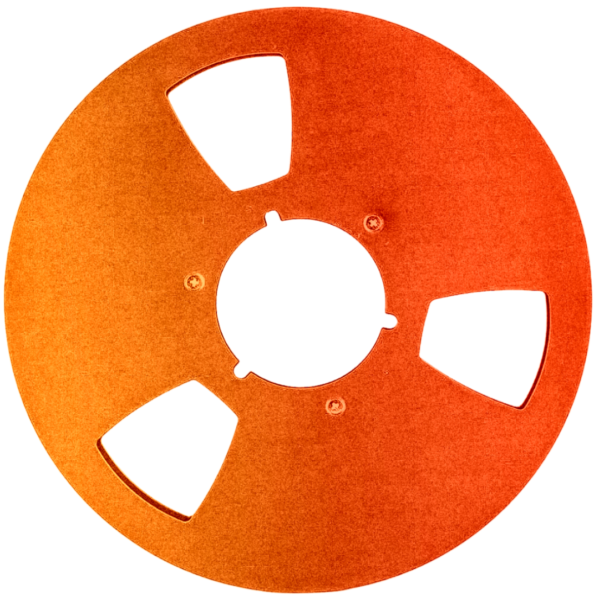
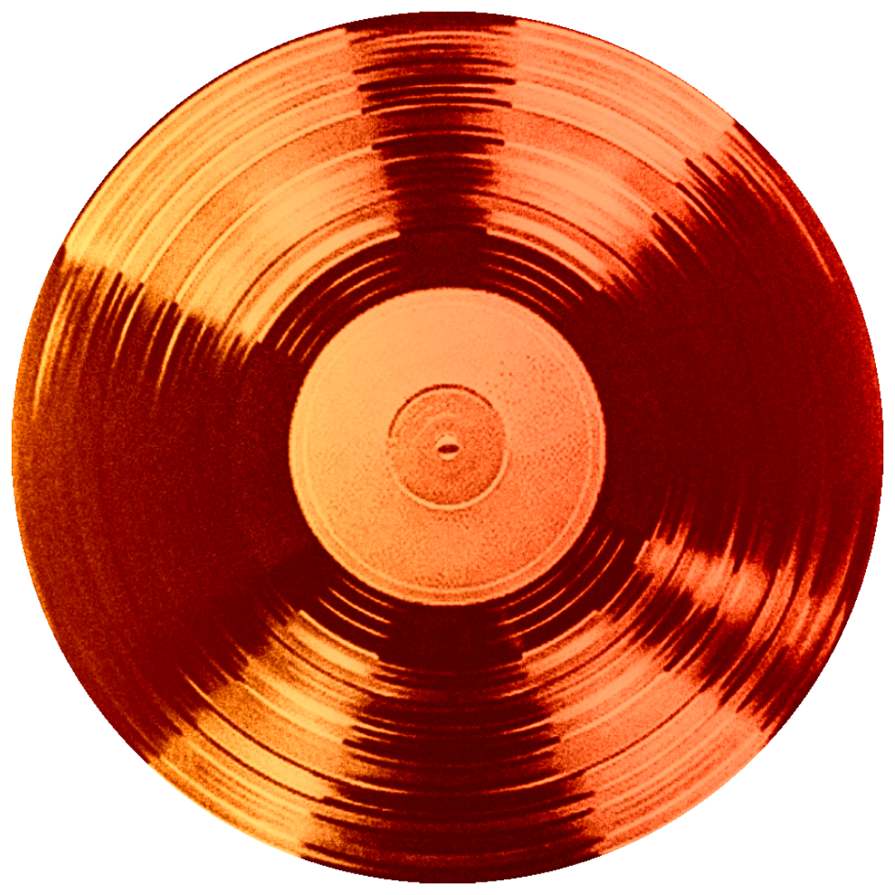
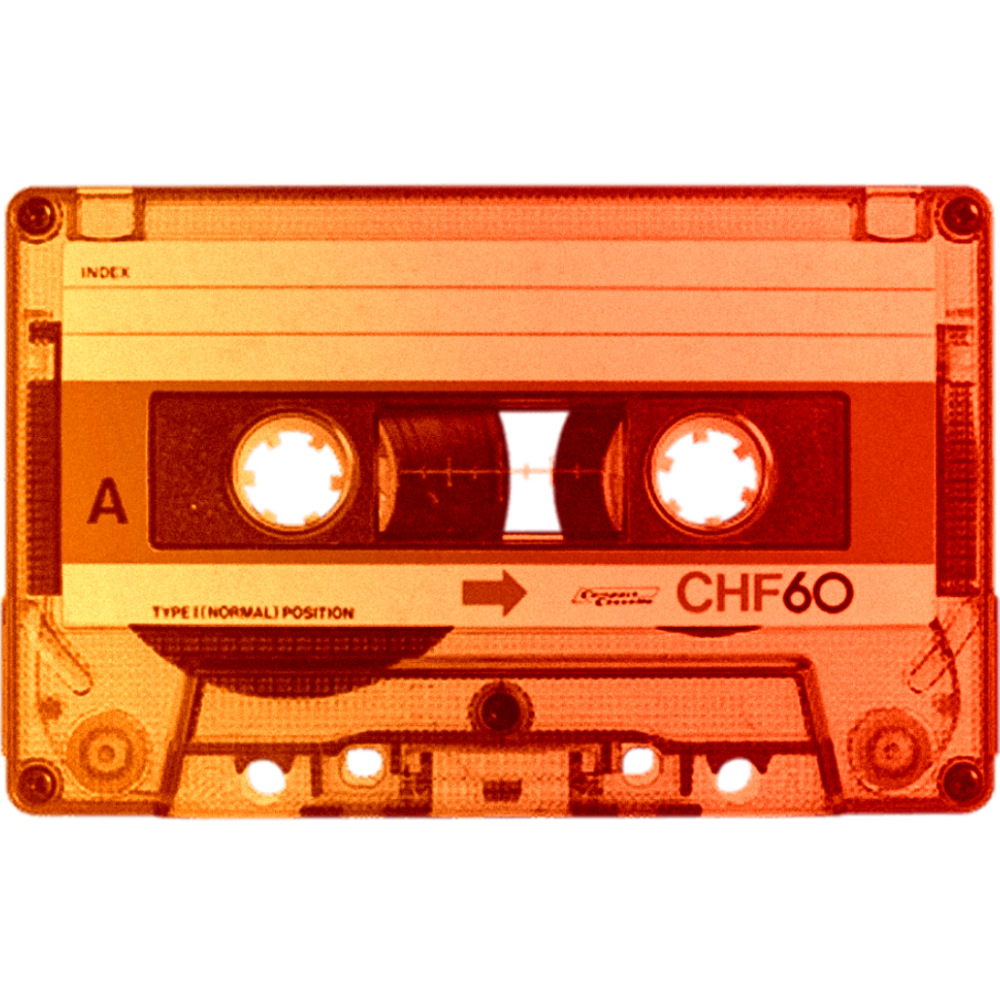
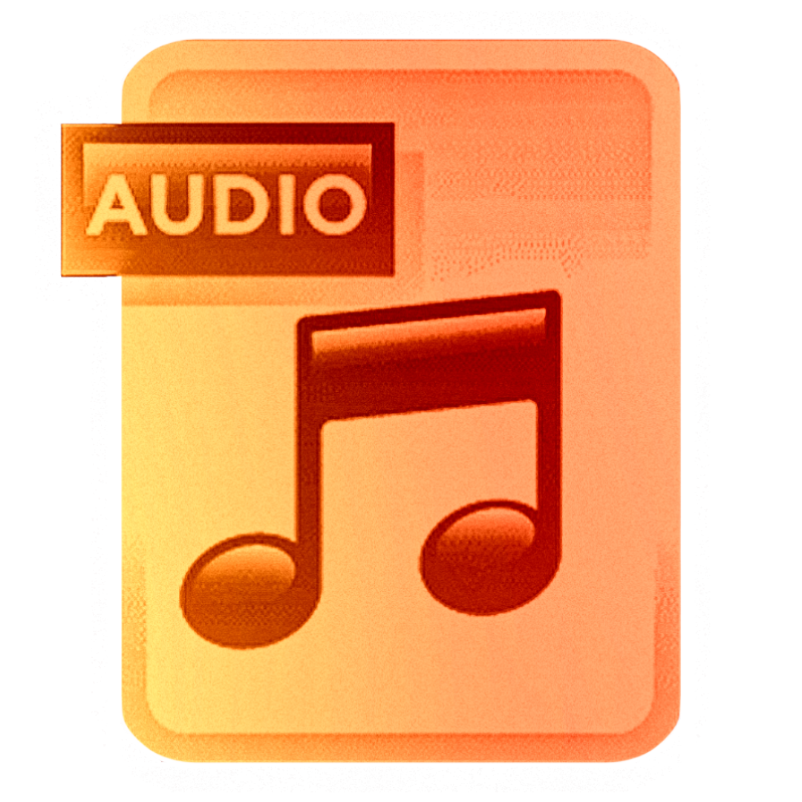

Cinta
Saturación armónica natural y almacenamiento magnético pionero.
Un recorrido conceptual a través de los soportes que resguardaron nuestra memoria auditiva. Desde la imperfección física del surco analógico hasta la intangibilidad del bit digital, analizamos cómo el formato moldea nuestra percepción del tiempo.
Registro Audiovisual: La Evolución del Soporte (Ensayo FADU)

Saturación armónica natural y almacenamiento magnético pionero.

Fidelidad mecánica y calor analógico grabado en surcos físicos.

La democratización del audio portátil mediante cinta magnética compacta.

Música líquida: la abstracción total del sonido en código binario.
Hacé un click en la pantalla para activar el sistema y pasá el mouse por la grilla para escuchar las diferencias físicas.
Deslizá el control para ver cómo el paso del tiempo y el soporte degradan la identidad del sonido original.
La integridad de la fuente. Cuando llega un archivo que tiene años, el sonido se va 'cansando' o corrompiendo. Cuando alguien le dé play, debería escuchar lo que el productor original quiso dejar ahí hace 30 o 40 años, no el ruido que le metió el paso del tiempo. Es devolverle a la obra su 'firma' original.
El límite de la cancha. Si tenés una grabación en cinta, tenés una saturación armónica natural y un piso de ruido que son parte del sonido; si tenés un digital viejo, tenés un aliasing que a veces es hasta característico. No se busca que todo suene perfecto y plano; sino respetar las 'mañas' de cada formato.
Es tu base de datos técnica. Si no está claro en qué sample rate se grabó, si tiene una conversión mal hecha o si el formato está comprimido, estás laburando a ciegas. Un buen archivo es aquel que, si mañana me muero y viene otro productor a abrir el proyecto, entiende perfectamente la cadena y la calidad.
Paso crítico de la traducción. Momento donde agarrás el mundo físico —el magnetismo de una cinta o la aguja en el vinilo— y lo pasás a unos y ceros. Si en ese paso te equivocás, perdiste la mitad de la información y ya no hay vuelta atrás. Digitalizar es capturar la esencia sin meterle ruido de conversión.
El archivo está dañado por el tiempo. Manipulá las frecuencias para sintonizar la voz original y recuperar el registro.
"...aquello que no se nombra textualmente en los documentos oficiales sobrevive en la vibración de las cintas familiares..."